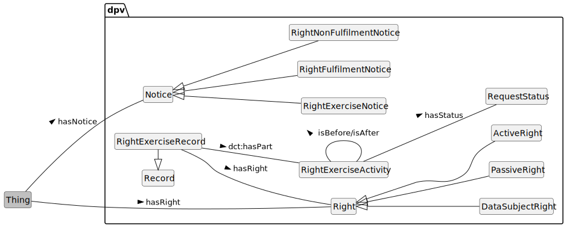

This document provides additional details and examples for rights and rights excercise concepts used in the Data Privacy Vocabulary [[DPV]], and is a companion to the [[DPV]] specification.
Contributing: The DPVCG welcomes participation to improve the DPV and associated resources, including expansion or refinement of concepts, requesting information and applications, and addressing open issues. See contributing guide for further information.
DPV and Related Resources
[[[DPV]]]: is the base/core specification for the 'Data Privacy Vocabulary', which is extended for Personal Data [[PD]], Locations [[LOC]], Risk Management [[RISK]], Technology [[TECH]], and [[AI]]. Specific [[LEGAL]] extensions are also provided which model jurisdiction specific regulations and concepts - see the complete list of extensions. To support understanding and applications of [[DPV]], various guides and resources [[GUIDES]] are provided, including a [[PRIMER]]. A Search Index of all concepts from DPV and extensions is available.
[[DPV]] and related resources are published on GitHub. For a general overview of the Data Protection Vocabularies and Controls Community Group [[DPVCG]], its history, deliverables, and activities - refer to DPVCG Website. For meetings, see the DPVCG calendar.
The peer-reviewed article “Creating A Vocabulary for Data Privacy” presents a historical overview of the DPVCG, and describes the methodology and structure of the DPV along with describing its creation. An open-access version can be accessed here, here, and here. The article preprint Data Privacy Vocabulary (DPV) - Version 2 describes the changes made in DPV v2.
Introduction

The concept [=Right=] represents a normative concept for what is permissible or necessary in accordance with a system such as laws. To associate rights with concepts that are relevant or within which those rights occur, the relation [=hasRight=] is used. Rights can be passive, which means they are always applicable without requiring anything to be done, or active where they require some action to be taken to initiate or exercise them. To represent these concepts, DPV uses [=PassiveRight=] and [=ActiveRight=] respectively. Rights can be applicable to different contexts or entities. To differentiate rights applicable or afforded to data subjects, the concept [=DataSubjectRight=] is used.
dpv:RightNotice: Information associated with rights, such as which rights exist, when and where they are applicable, and other relevant information
go to full definition
dpv:RightExerciseNotice: Information associated with exercising of an active right such as where and how to exercise the right, information required for it, or updates on an exercised rights request
go to full definition
dpv:RightFulfilmentNotice: Notice provided regarding fulfilment of a right
go to full definition
dpv:RightNonFulfilmentNotice: Notice provided regarding non-fulfilment of a right
go to full definition
Rights Notices
The information provided regarding a right is called a 'Rights Notice'. It may be used to describe which rights exist, when they are applicable, how to exercise them, and other pertinent details. As with other notices in DPV, a rights notice is associated by using the `dpv:hasNotice` relation. The concept [=RightExerciseNotice=] represents specifically notices associated with exercising of rights - such as to indicate where and how to exercise it (expressed using [=isExercisedAt=] relation), or what information is required for the exercise, or to provide updates on an exercised rights request. For expressing contextual information, other existing concepts should be reused e.g. Process
to group related information together into a 'process', with hasPurpose
and IdentityVerification
to indicate the right exercise will involve identity verification.
To indicate information about whether a rights exercise has been fulfilled or cannot be fulfilled - such as when additional information is needed, the concepts [=RightFulfilmentNotice=] and [=RightNonFulfilmentNotice=] are provided.
Rights Exercise
A [=RightExerciseActivity=] represents a concrete instance of a right being exercised. It can include contextual information such as timestamps, durations, entities, etc. that can be part of record-keeping. An activity can be a single step related to rights exercise -- such as the initial request to exercise that right, or its acknowledgement, or the final step taken to fulfil the right (e.g. provide some information), or it can also be a single activity describing the entire rights exercise process(es). To collate related activities associated with a rights exercise (e.g. associated with a specific data subject or a specific request), the concept [=RightExerciseRecord=] is useful.
Rights Records
To indicate contextual information about Right Exercise activities, DPV suggests reuse of existing relations, such as those from DPV itself and [[[DCT]]]. For example, dct:accessRights can be used to specify constraints or requirements regarding access (e.g. log in required), or dct:hasPart and dct:isPartOf to express records and its contents, dct:valid to express validity constraints on the exercising being made available, foaf:page to specify the location or provision of notice, and hasStatus
with RequestStatus
to represent the status of a rights exercise activity.
When rights require the provision of information which beyond a static common notice, for example a document personalised to the individual's information, or a dataset containing the individual's data, DPV recommends using [[[DCAT]]] to model the contents as a dcat:Resource or other relevant concepts from [[DCAT]] and [[DCT]] such as dct:format, dct:accessRights, and dct:valid.
The right(s) applicable, provided, or expected that are always (passively) applicable
Usage Note
Passive rights do not require the entity to request or exercise them. They are considered to be always applicable. For example, the Right to Privacy (in EU) does not require an exercise for it to be fulfilled.
Date Created
2022-10-22
Contributors
Harshvardhan J. Pandit, Beatriz Esteves, Georg P. Krog, Paul Ryan
A 'right' is a legal, social, or ethical principle of freedom or entitlement which dictate the norms regarding what is allowed or owed. Rights as a concept encompass a broad area of norms and entities, and are not specific to Individuals or Data Protection / Privacy. For individual specific rights, see dpv:DataSubjectRight
An activity representing an exercising of an active right
Usage Note
There may be multiple activities associated with exercising and fulfilling rights. See the RightExerciseRecord concept for record-keeping of such activities in a cohesive manner.
Information associated with exercising of an active right such as where and how to exercise the right, information required for it, or updates on an exercised rights request
Usage Note
This concept is intended for providing information regarding a right exercise. For specific instances of such exercises, see RightExerciseActivity and RightExerciseRecord.
Date Created
2022-10-22
Contributors
Harshvardhan J. Pandit, Beatriz Esteves, Georg P. Krog, Paul Ryan
This notice is associated with situations where information is provided with the intention of progressing the fulfilment of a right. For example, a notice asking for more information regarding the scope of the right, or providing information on where to access the data provided under a right.
Notice provided regarding non-fulfilment of a right
Usage Note
This notice is associated with situations where information is provided with the intention of communicating non-fulfilment of a right. For example, to provide justifications on why a right could not be fulfilled or providing information about another entity who should be approached for exercising this right.
Information associated with rights, such as which rights exist, when and where they are applicable, and other relevant information
Usage Note
This concept also covers information about rights exercise, with dpv:RightExerciseNotice specifically representing information provided in connection with exercising of rights. Both notices may be needed, e.g. RightNotice for providing information about existence and exercise of rights, and RightExerciseNotice for providing additional information specifically about exercise of rights - such as to request more information or provide updates on an exercised rights request
Indicates implementation details such as entities or agents
Usage Note
Also used to indicate the Entity that implements or performs a Right Exercise Activity
Usage Note
The use of 'entity' is inclusive of entities (e.g. Data Processor) as well as 'agent' (e.g. DPO). For indicating technological implementation, the property isImplementedByTechnology should be used.
Also used for specifying constraints on access associated with Rights Exercising (e.g. User must log in) or access to provided data (e.g. access via link)
Also used for specifying the temporal validity of an activity associated with Right Exercise. For example, limits on duration for providing or accessing provided information
The following people have contributed to this vocabulary. The names are ordered alphabetically. The affiliations are informative do not represent formal endorsements. Affiliations may be outdated. The list is generated automatically from the contributors listed for defined concepts.
Arthit Suriyawongkul (ADAPT Centre, Trinity College Dublin)
Axel Polleres (Vienna University of Economics and Business)
Beatriz Esteves (IDLab, IMEC, Ghent University)
Bud Bruegger (Unabhängige Landeszentrum für Datenschutz Schleswig-Holstein)
Damien Desfontaines ()
David Hickey (Dublin City University)
Delaram Golpayegani (ADAPT Centre, Trinity College Dublin)
Elmar Kiesling (Vienna University of Technology)
Fajar Ekaputra (Vienna University of Technology)
Georg P. Krog (Signatu AS)
Harshvardhan J. Pandit (ADAPT Centre, Dublin City University)
Javier Fernández (Vienna University of Economics and Business)
Julian Flake (University of Koblenz)
Mark Lizar (OpenConsent/Kantara Initiative)
Maya Borges ()
Paul Ryan (Uniphar PLC)
Piero Bonatti (Università di Napoli Federico II)
Rana Saniei (Universidad Politécnica de Madrid)
Rob Brennan (University College Dublin)
Rudy Jacob (Proximus)
Simon Steyskal (Siemens)
Steve Hickman ()
Funding Acknowledgements
Funding Sponsors
The DPVCG was established as part of the SPECIAL H2020 Project, which received funding from the European Union’s Horizon 2020 research and innovation programme under grant agreement No. 731601 from 2017 to 2019.
Harshvardhan J. Pandit was funded to work on DPV from 2020 to 2022 by the Irish Research Council's Government of Ireland Postdoctoral Fellowship Grant#GOIPD/2020/790.
The ADAPT SFI Centre for Digital Media Technology is funded by Science Foundation Ireland through the SFI Research Centres Programme and is co-funded under the European Regional Development Fund (ERDF) through Grant#13/RC/2106 (2018 to 2020) and Grant#13/RC/2106_P2 (2021 onwards).
Funding Acknowledgements for Contributors
The contributions of Harshvardhan J. Pandit have been made with the financial support of Science Foundation Ireland under Grant Agreement No. 13/RC/2106_P2 at the ADAPT SFI Research Centre.